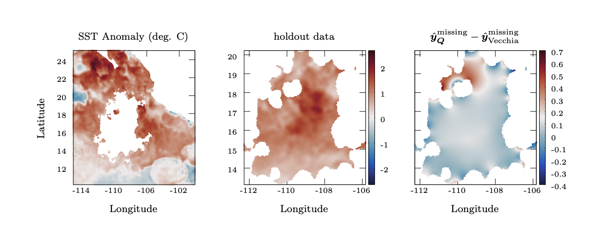

Trustworthy Generative Models
Understanding how and why diffusion models produce hallucinated or off-manifold samples, and developing methods that make generation more reliable and faithful to the data.
Computer Science at UW–Madison · Diffusion models · Gaussian processes
I am a computer science undergraduate at the University of Wisconsin–Madison. My research lies at the intersection of machine learning, statistics, and scientific computing, with a focus on reliable generative models and scalable probabilistic methods. Broadly my research spans two directions:
Understanding how and why diffusion models produce hallucinated or off-manifold samples, and developing methods that make generation more reliable and faithful to the data.
Developing computationally efficient methods for large-scale and online Gaussian-process prediction, while preserving the predictive information and accuracy of exact conditioning.

International Conference on Machine Learning, 2026
We show that deterministic DDIM trajectories can become trapped between nearby modes, while DDPM noise can help them escape low-density regions.
We analyze reverse ODE and SDE dynamics for Gaussian-mixture targets, characterize when DDIM trajectories become trapped near mode-interpolation regions, and explain how DDPM stochasticity can help trajectories escape.

arXiv:2605.02574, 2026
We condition Gaussian-process predictions on carefully designed linear combinations of observations, enabling accurate large-scale and online prediction at lower cost.
The method replaces direct conditioning on all observations with a small set of designed data contrasts. For smooth kernels, these contrasts can preserve the relevant conditional information while substantially reducing repeated prediction cost.
Open Source Program Office · University of Wisconsin–Madison
Built and benchmarked surrogate approximations for repeated Matérn covariance evaluation in Gaussian-process workflows.
NeuralSeek
Designed multi-agent and retrieval workflows and evaluated enterprise generative-AI pipelines for grounding and orchestration quality.
Madison Experimental Mathematics Lab · University of Wisconsin–Madison
Studied reinforcement-learning agents trained with Ensemble Kalman Filter data for state estimation in Lorenz dynamical systems.
B.S. in Computer Science · GPA: 3.87/4.00
B.Tech. in Mechanical Engineering · Transferred
* Graduate-level course.
L&S Honors Summer Senior Thesis Research Grant
L&S Honors Summer Research Apprenticeship
Augusta Schurrer Undergraduate Student Scholarship